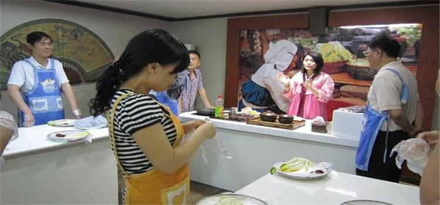
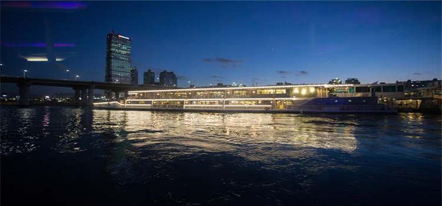

特色体验
#首尔明洞泡菜体验馆（文化体验）#
制作泡菜是学习韩国文化的必修课。首尔泡菜文化体验馆提供有关泡菜的各种体验活动，向外国游客宣传韩国的历史和文化。外国游客在泡菜腌制专家的指导下，可以现场制作泡菜和辣炒年糕，还能够将制作的泡菜当成礼物带回国。
地址：首尔市中区明洞2街32-2（明洞 8路 21-7）

图：首尔明洞泡菜体验馆
#汉江游览船体验#
汉江可谓是韩国的母亲河，汉江游览船于1986年10月26日前首航，为首度东西横穿首尔市中心的游览船。目前有汝矣岛、蚕室、纛岛、杨花、蚕头峰、仙游岛、首尔林、金浦、仁川等7个码头与2个客轮站，有很多条路线，游轮也不一样，时间都在一小时到一个半小时之间。一圈下来差不多就能把汉江两岸的景色都看完了，所以很适合天气好的时候乘船夜游。
很多韩国人，特别是情侣到了周末都会选择先到汉江边来个野外烧烤，然后晚上就乘坐汉江游轮游玩一番。买汉江游船票，是否有表演、是否有自助餐，决定了票价不同。船内的自助餐搭配高雅的环境，绝对是最顶级的体验！

图：汉江游览船体验
#4D爱来魔相艺术馆#
爱来魔相4D艺术馆推出3，300平米超大规模的4D艺术展馆，不再单单局限在平凡的3D画中，而是通过声音、灯光、风力等多媒体技术真正的感受和融入4D作品。超大的场馆，新颖的作品，多元化的艺术类型。
地址：首尔市钟路区桂洞街37